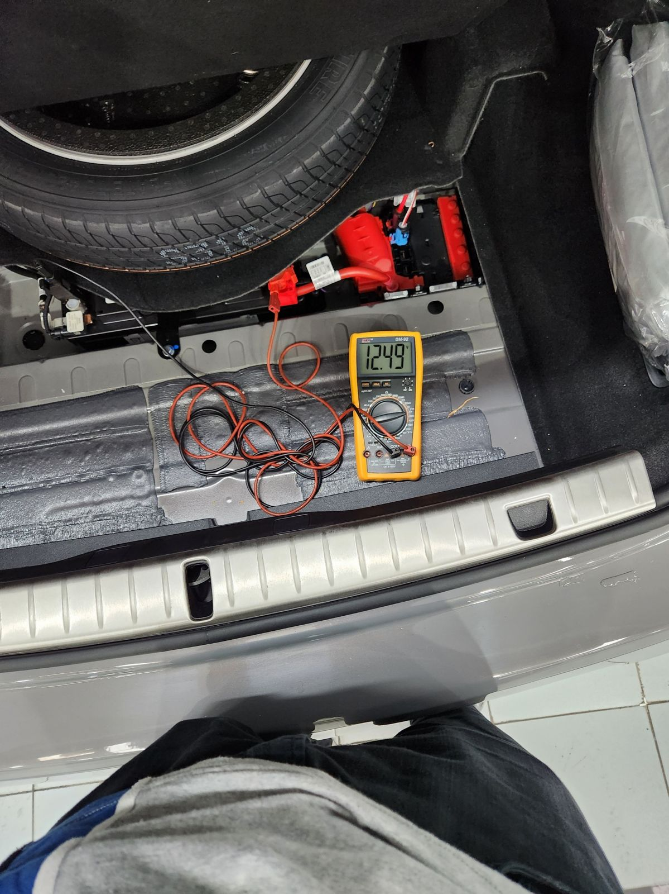
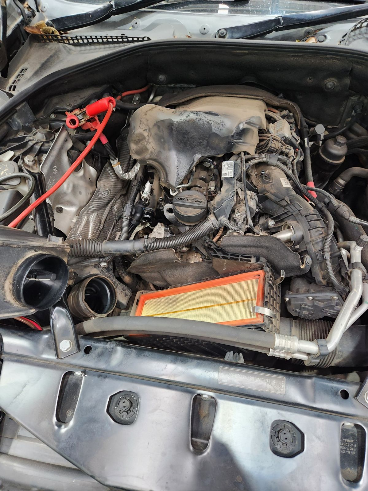
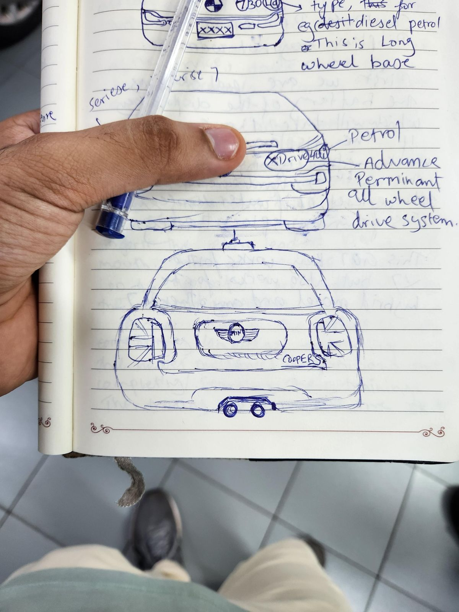

BMW Infinity Workshop — Test Engineer Intern
Sheet
02 of 08
- Dates
- Jun 2023 – Jul 2023
- Context
- BMW Infinity Workshop, Mumbai, India
- Role
- Test engineer intern, working alongside a senior technician as mentor
- Tools
- ICOM/ISSS · ISTA · ISTA/P · AIR · ECU programming · multimeter · refractometer
Troubleshot 50+ cars and owned a three-week water-damage diagnosis on an F56 Mini Cooper S, tracing the fault to battery corrosion at a known battery-tray weak point.
Key numbers
- Cars troubleshot
- 50+
- Water-damage diagnosis
- 3 weeks

Objective and constraints
- An F56 Mini Cooper S came in after a heavy monsoon season with systems behaving unpredictably from water exposure.
- Over three weeks, working alongside a senior technician, I owned the diagnosis from start to finish.
What I did
Across the internship
- Troubleshot 50+ cars and reprogrammed BMW ECUs using ICOM/ISSS, ISTA, ISTA/P, and AIR.
- Ran multimeter and refractometer checks.
- Wrote step-by-step repair checklists to standardize shop work.
Featured case: F56 Mini Cooper S water damage
- Started with a physical inspection, sketching the car's layout in my notebook to map suspected damage zones and log what I'd checked, what looked abnormal, and what still needed testing.
- Connected the ICOM system to pull electronic fault data and used it to target tests on the accelerator pedal, brakes, battery, and other water-exposed components.
- Ran routine checks alongside, such as engine-bay wiring (watching for rodent damage) and a full oil change.
Tools explained
- ICOM
- Integrated Communication Optical Module. BMW's vehicle interface that connects the workshop diagnostic system to the car.
- ISSS
- Integrated Software Service Station. The workshop station that runs ISTA/P programming and coding sessions.
- ISTA
- Integrated Service Technical Application. BMW's dealer workshop software for diagnosis and service functions.
- ISTA/P
- Integrated Service Technical Application / Programming. The part of ISTA that programs and codes control units.
- AIR
- Aftersales Information Research. BMW's system for repair instructions, labor times, and parts information.
- ECU
- Electronic Control Unit. One of the car's onboard computers (BMW calls them control units); reprogramming updates their software.
Result
The root cause was the battery: corrosion from water pooling at a known weak point in this model's battery tray. The fix was a battery replacement.
What I'd do differently
I didn't flag the battery tray early enough, and evaporation residue showed the water had been sitting for some time. To close that gap I checked the ECM and surrounding electronics for related damage; they were clear. The lesson: diagnose methodically from evidence, and don't assume a problem is isolated until you've checked what's around it.
Gallery





